على الورق
الصيغة الأساسية: حبر ونقطة وردية، للتطبيق والموقع والمطبوعات.
زاوية كإطار الكاميرا ونقطة وردية كزر التسجيل، ومعهما لونان وخطّان وقوالب منشورات لكل منصة.
النقطة نفسها نقطة الزاي في اسم «زاوية»، لذلك يقرأ الرمز والاسم معًا كقطعة واحدة.
الصيغة الأساسية: حبر ونقطة وردية، للتطبيق والموقع والمطبوعات.
للوضع الداكن وغلاف الحساب والفيديو: أبيض ونقطة وردية.

للحملات وصورة الحساب فقط: أبيض، والنقطة بالحبر.


لا. النقطة وردية على الحبر والورق، وبالحبر على الوردي فقط.
تحت 96 بكسل عرضًا: صورة الحساب وأيقونة التطبيق والعلامة المائية على الفيديو.
لا. الاسم ملف SVG جاهز، ولا يعاد كتابته بخط الإسكندرية أو غيره.
لا. سماكة الزاوية ثابتة عند كل مقاس، ولا يستخدم الرمز مفرّغًا.
نعم إذا كان الجزء تحته هادئًا وداكنًا، بالأبيض. وإلا فاستخدم قالب الحبر.
في الركن الأيمن العلوي، على بعد 4 في المئة من الحافتين، وبالأبيض.
قوالب المنشورات. الزاوية في الركن الأيمن.
منشور مربع 1080 × 1080
عنوان من سطرين على الحبر، واسم الحساب تحته.
قصة 1080 × 1920
على الوردي للإعلانات والبث المباشر فقط.
صفحة الحساب
صورة الحساب أيقونة التطبيق، والغلاف حبر وزاوية وردية.